Euler Bernoulli beam with cubic spring and damper and internal resonance
Contents
Bernoulli beam with 1:3 internal resonance
In this example, we consider a cantilever beam with a nonlinear support spring at its free end. The linear part of the stiffness of the support spring is tuned such that 1:3 internal resonance occurs between the first two bending modes.

We then extract the forced response curve for both periodic and quasi-periodic response using SSM reduction. In particular, both two- and three-dimensional invariant tori will be computed. Dynamical System Setup Numerical experiments show that a near 1:3 internal resonance occurs at 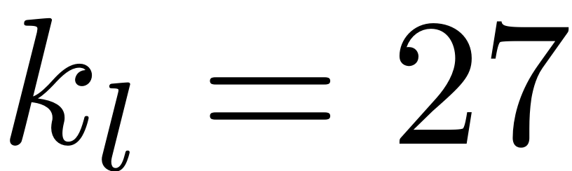. In the following computations, we set the number of beam elements to be 40. The bifurcations observed here are persistent when the number of elements is increased.
nElements = 40; kLinear = 27; kNonlinear = 60; [M,C,K,fnl] = build_model(nElements,kLinear,kNonlinear); DS = DynamicalSystem(); set(DS,'M',M,'C',C,'K',K,'fnl',fnl); set(DS.Options,'Emax',10,'Nmax',10,'notation','multiindex','RayleighDamp',false)
Linear Modal analysis
[V,D,W] = DS.linear_spectral_analysis();
The first 10 nonzero eigenvalues are given as 1.0e+02 * -0.0000 + 0.1560i -0.0000 - 0.1560i -0.0002 + 0.4658i -0.0002 - 0.4658i -0.0019 + 1.2377i -0.0019 - 1.2377i -0.0072 + 2.4119i -0.0072 - 2.4119i -0.0198 + 3.9821i -0.0198 - 3.9821i
Add forcing
Excitation of the form 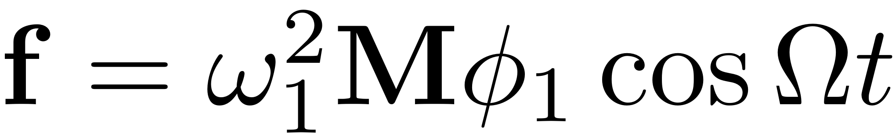 is applied such that only the first linear mode is activated if damping and nonlinear internal forces are removed.
[vs,om_nat] = eigs(K,M,2,'smallestabs'); om_nat = sqrt(diag(om_nat)); f_0 = (om_nat(1))^2*M*vs(:,1); epsilon = 0.002; kappas = [-1; 1]; coeffs = [f_0 f_0]/2; DS.add_forcing(coeffs, kappas, epsilon);
SSM Computation
We now choose a master spectral subspace over which the SSM is constructed. Since the first two modepairs are in resnonance, both have to be included into the subspace. The constructed manifold will thus be 4-dimensional.
S = SSM(DS); set(S.Options, 'reltol', 0.1,'notation','multiindex') resonant_modes = [1 2 3 4]; mFreq = [1 3]; order = 7; % Approximation order outdof = [2*round(nElements/2)-1; 2*nElements-1]; n = length(M);
Continuation of equilibria
SSM_isol2ep: continuation of equilibrium points Each equilibrium here corresponds to a periodic orbit of the full system.
freqRange = [15.30 15.95]; set(S.FRCOptions, 'SampStyle','cocoBD'); % sampling style set(S.FRCOptions, 'nCycle',5000, 'initialSolver', 'fsolve'); % solver for initial solution set(S.contOptions, 'h_min',1e-3,'h_max',0.01,'NSV',10,'bi_direct',true,'PtMX',100); % continuation setting set(S.FRCOptions, 'coordinates', 'cartesian'); % two representations isolid = ['isol-',num2str(nElements),'-',num2str(order),'c']; startep = tic; FRC = S.SSM_isol2ep(isolid,resonant_modes,order,mFreq,'freq',freqRange,outdof); timings.epFRC = toc(startep);
The master subspace contains the following eigenvalues
lambda1 == - 0.00103059 + 15.6033i
lambda2 == (-0.00103059) - 15.6033i
lambda3 == - 0.0238945 + 46.5766i
lambda4 == (-0.0238945) - 46.5766i
(near) outer resonance detected for the following combinations of master eigenvalues
They are in resonance with the following eigenvalues of the slave subspace
0*lambda1 + 1*lambda2 + 3*lambda3 + 0*lambda4 == - 0.1886207 + 123.7738i
2*lambda1 + 0*lambda2 + 2*lambda3 + 0*lambda4 == - 0.1886207 + 123.7738i
0*lambda1 + 1*lambda2 + 4*lambda3 + 1*lambda4 == - 0.1886207 + 123.7738i
.
.
.
sigma_out = 1920
(near) inner resonance detected for the following combination of master eigenvalues:
0*lambda1 + 2*lambda2 + 1*lambda3 + 0*lambda4 == lambda1
1*lambda1 + 0*lambda2 + 1*lambda3 + 1*lambda4 == lambda1
2*lambda1 + 1*lambda2 + 0*lambda3 + 0*lambda4 == lambda1
.
.
.
0*lambda1 + 1*lambda2 + 1*lambda3 + 1*lambda4 == lambda2
1*lambda1 + 2*lambda2 + 0*lambda3 + 0*lambda4 == lambda2
2*lambda1 + 0*lambda2 + 0*lambda3 + 1*lambda4 == lambda2
.
.
.
0*lambda1 + 0*lambda2 + 2*lambda3 + 1*lambda4 == lambda3
1*lambda1 + 1*lambda2 + 1*lambda3 + 0*lambda4 == lambda3
3*lambda1 + 0*lambda2 + 0*lambda3 + 0*lambda4 == lambda3
.
.
.
0*lambda1 + 0*lambda2 + 1*lambda3 + 2*lambda4 == lambda4
0*lambda1 + 3*lambda2 + 0*lambda3 + 0*lambda4 == lambda4
1*lambda1 + 1*lambda2 + 0*lambda3 + 1*lambda4 == lambda4
.
.
.
sigma_in = 1920
Due to (near) outer resonance, the exisitence of the manifold is questionable and the underlying computation may suffer.
Attempting manifold computation
Manifold computation time at order 2 = 00:00:05
Estimated memory usage at order 2 = 1.76E-01 MB
Manifold computation time at order 3 = 00:00:00
Estimated memory usage at order 3 = 5.95E-01 MB
Manifold computation time at order 4 = 00:00:00
Estimated memory usage at order 4 = 9.22E-01 MB
Manifold computation time at order 5 = 00:00:00
Estimated memory usage at order 5 = 2.34E+00 MB
Manifold computation time at order 6 = 00:00:00
Estimated memory usage at order 6 = 3.51E+00 MB
Manifold computation time at order 7 = 00:00:00
Estimated memory usage at order 7 = 7.15E+00 MB
Equation solved.
fsolve completed because the vector of function values is near zero
as measured by the value of the function tolerance, and
the problem appears regular as measured by the gradient.
Run='isol-40-7c.ep': Continue equilibria along primary branch.
STEP DAMPING NORMS COMPUTATION TIMES
IT SIT GAMMA ||d|| ||f|| ||U|| F(x) DF(x) SOLVE
0 2.49e-13 2.21e+01 0.0 0.0 0.0
STEP TIME ||U|| LABEL TYPE om Rez1 Rez2 Imz1 Imz2 eps
0 00:00:00 2.2066e+01 1 EP 1.5603e+01 -2.6828e-02 -1.0138e-02 2.9467e-03 -1.0906e-03 2.0000e-03
10 00:00:01 2.2038e+01 2 SN 1.5583e+01 -2.2559e-02 -1.3565e-02 6.8869e-03 -7.9042e-03 2.0000e-03
10 00:00:01 2.2038e+01 3 FP 1.5583e+01 -2.2559e-02 -1.3565e-02 6.8870e-03 -7.9042e-03 2.0000e-03
10 00:00:01 2.2038e+01 4 1.5583e+01 -2.2552e-02 -1.3479e-02 6.9850e-03 -8.2648e-03 2.0000e-03
20 00:00:01 2.2042e+01 5 1.5586e+01 -2.3687e-02 -8.8916e-03 8.1207e-03 -1.4535e-02 2.0000e-03
27 00:00:02 2.2048e+01 6 HB 1.5590e+01 -2.6008e-02 -1.7629e-03 8.0273e-03 -1.6839e-02 2.0000e-03
30 00:00:02 2.2050e+01 7 1.5592e+01 -2.7530e-02 2.2132e-03 7.5740e-03 -1.6290e-02 2.0000e-03
36 00:00:02 2.2052e+01 8 FP 1.5593e+01 -2.9510e-02 6.3700e-03 6.6270e-03 -1.3980e-02 2.0000e-03
36 00:00:02 2.2052e+01 9 SN 1.5593e+01 -2.9510e-02 6.3701e-03 6.6270e-03 -1.3980e-02 2.0000e-03
40 00:00:02 2.2051e+01 10 1.5592e+01 -3.0646e-02 8.1248e-03 5.8682e-03 -1.1939e-02 2.0000e-03
50 00:00:03 2.2043e+01 11 1.5587e+01 -3.2447e-02 9.4371e-03 4.0091e-03 -7.2101e-03 2.0000e-03
51 00:00:03 2.2043e+01 12 HB 1.5587e+01 -3.2449e-02 9.4368e-03 4.0069e-03 -7.2048e-03 2.0000e-03
60 00:00:03 2.1979e+01 13 1.5542e+01 -3.1578e-02 4.9750e-03 8.3728e-04 -1.0590e-03 2.0000e-03
70 00:00:04 2.1879e+01 14 1.5471e+01 -2.7616e-02 1.8536e-03 1.9365e-04 -1.6927e-04 2.0000e-03
80 00:00:04 2.1780e+01 15 1.5400e+01 -2.4185e-02 8.3302e-04 9.4228e-05 -4.8263e-05 2.0000e-03
90 00:00:04 2.1680e+01 16 1.5330e+01 -2.1220e-02 4.1705e-04 6.2095e-05 -1.7790e-05 2.0000e-03
95 00:00:05 2.1637e+01 17 EP 1.5300e+01 -2.0093e-02 3.1835e-04 5.3972e-05 -1.2219e-05 2.0000e-03
STEP TIME ||U|| LABEL TYPE om Rez1 Rez2 Imz1 Imz2 eps
0 00:00:05 2.2066e+01 18 EP 1.5603e+01 -2.6828e-02 -1.0138e-02 2.9467e-03 -1.0906e-03 2.0000e-03
9 00:00:05 2.2154e+01 19 HB 1.5665e+01 -3.2831e-02 -6.0116e-03 1.1299e-03 -2.1552e-04 2.0000e-03
10 00:00:05 2.2166e+01 20 1.5673e+01 -3.3414e-02 -5.7526e-03 1.0513e-03 -1.8388e-04 2.0000e-03
20 00:00:06 2.2265e+01 21 1.5744e+01 -3.7595e-02 -4.5542e-03 7.5339e-04 -4.9426e-05 2.0000e-03
30 00:00:06 2.2365e+01 22 1.5815e+01 -4.1238e-02 -4.1216e-03 6.9093e-04 4.0189e-06 2.0000e-03
37 00:00:06 2.2434e+01 23 HB 1.5863e+01 -4.3595e-02 -3.9979e-03 6.9177e-04 2.7121e-05 2.0000e-03
40 00:00:06 2.2465e+01 24 1.5885e+01 -4.4654e-02 -3.9684e-03 6.9871e-04 3.5975e-05 2.0000e-03
50 00:00:07 2.2557e+01 25 EP 1.5950e+01 -4.7662e-02 -3.9424e-03 7.3303e-04 5.8408e-05 2.0000e-03
the forcing frequency 1.5300e+01 is nearly resonant with the eigenvalue -1.0306e-03 + i1.5603e+01
the forcing frequency 1.5302e+01 is nearly resonant with the eigenvalue -1.0306e-03 + i1.5603e+01
the forcing frequency 1.5309e+01 is nearly resonant with the eigenvalue -1.0306e-03 + i1.5603e+01
.
.
.
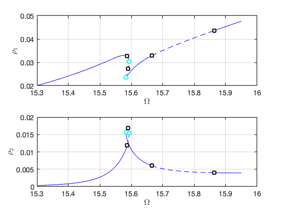 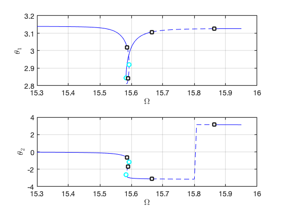 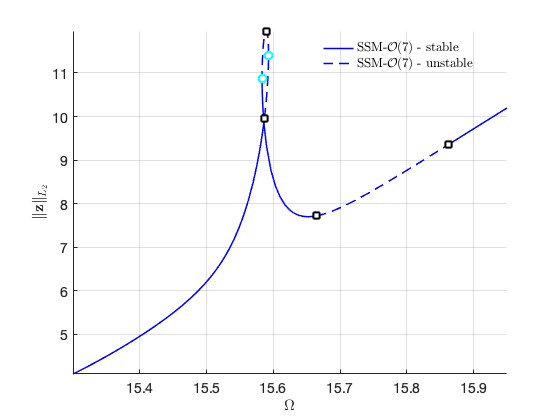 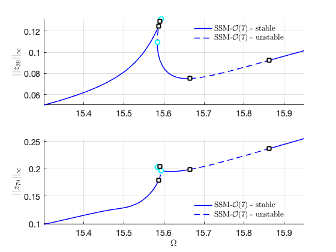 Continuation of Saddle Node bifurcations
SSM_ep2SN: continuation of SN equilibrium points Continuation of saddle-node bifurcations of periodic orbits.
set(S.contOptions, 'h_min',1e-3,'h_max',0.1); % continuation setting epsRange = [1e-4 1e-2]; bd = coco_bd_read([isolid,'.ep']); omega = coco_bd_col(bd,'om'); SNlab = coco_bd_labs(bd,'SN'); if ~isempty(SNlab) % find the lab with smallest omega SNidx = coco_bd_idxs(bd,'SN'); omSN = omega(SNidx); [~,id]= max(omSN); SNlab = SNlab(id); SNid = ['SN-',num2str(nElements),'-',num2str(order),'c']; S.SSM_ep2SN(SNid,isolid,SNlab,{freqRange,epsRange},outdof); end
Run='SN-40-7c.ep': Continue saddle-node equilibria from label 9 of run isol-40-7c.
STEP DAMPING NORMS COMPUTATION TIMES
IT SIT GAMMA ||d|| ||f|| ||U|| F(x) DF(x) SOLVE
0 7.53e-09 2.21e+01 0.0 0.0 0.0
STEP TIME ||U|| LABEL TYPE om eps Rez1 Rez2 Imz1 Imz2
0 00:00:00 2.2074e+01 1 EP 1.5593e+01 2.0000e-03 -2.9510e-02 6.3701e-03 6.6270e-03 -1.3980e-02
10 00:00:00 2.2029e+01 2 1.5561e+01 9.9036e-04 -2.0600e-02 -1.8906e-03 5.6106e-03 -9.7657e-03
14 00:00:01 2.2027e+01 3 FP 1.5559e+01 9.4686e-04 -1.9689e-02 -3.5754e-03 5.5115e-03 -8.9553e-03
20 00:00:01 2.2033e+01 4 1.5564e+01 1.1144e-03 -1.9811e-02 -7.2148e-03 5.9151e-03 -8.1084e-03
30 00:00:02 2.2091e+01 5 1.5604e+01 3.2354e-03 -2.5347e-02 -1.8662e-02 7.2287e-03 -8.2799e-03
36 00:00:02 2.2210e+01 6 EP 1.5689e+01 1.0000e-02 -3.4522e-02 -3.3213e-02 6.8809e-03 -9.5720e-03
STEP TIME ||U|| LABEL TYPE om eps Rez1 Rez2 Imz1 Imz2
0 00:00:02 2.2074e+01 7 EP 1.5593e+01 2.0000e-03 -2.9510e-02 6.3701e-03 6.6270e-03 -1.3980e-02
10 00:00:03 2.2211e+01 8 1.5689e+01 5.9424e-03 -4.7018e-02 2.0847e-02 6.1468e-03 -1.4555e-02
15 00:00:03 2.2322e+01 9 EP 1.5768e+01 1.0000e-02 -5.8059e-02 2.8255e-02 5.5088e-03 -1.3193e-02
the forcing frequency 1.5689e+01 is nearly resonant with the eigenvalue -1.0306e-03 + i1.5603e+01
the forcing frequency 1.5673e+01 is nearly resonant with the eigenvalue -1.0306e-03 + i1.5603e+01
the forcing frequency 1.5654e+01 is nearly resonant with the eigenvalue -1.0306e-03 + i1.5603e+01
.
.
.
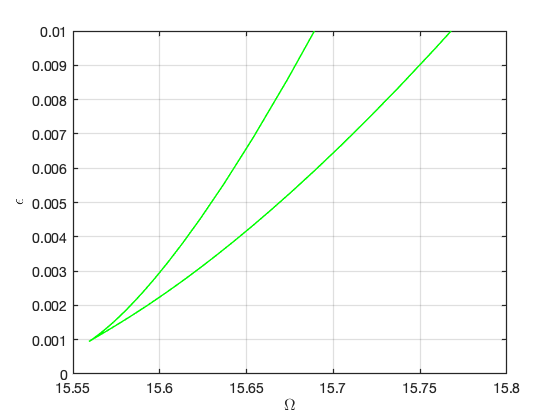 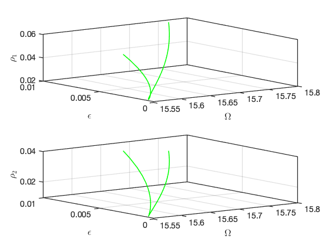 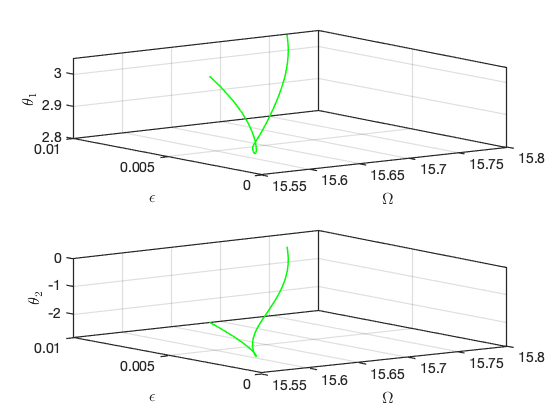 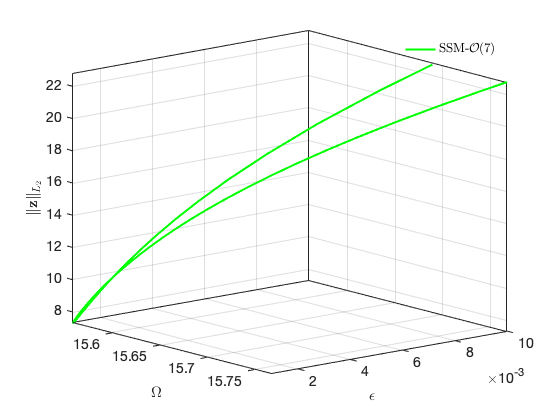 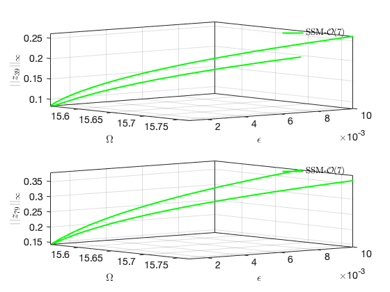 Continuation of Hopf Bifurcations
SSM_ep2HB: continuation of HB equilibrium points Continuation of Hopf bifurcation of periodic orbits.
HBlab = coco_bd_labs(bd,'HB'); % find the lab with smallest omega HBidx = coco_bd_idxs(bd,'HB'); omHB = omega(HBidx); [~,idx] = sort(omHB); HBlab1 = HBlab(idx(end-1)); HBid1 = ['HB1-',num2str(nElements),'-',num2str(order),'c']; S.SSM_ep2HB(HBid1,isolid,HBlab1,{freqRange,epsRange},outdof);
Run='HB1-40-7c.ep': Continue Hopf equilibria from label 19 of run isol-40-7c.
STEP DAMPING NORMS COMPUTATION TIMES
IT SIT GAMMA ||d|| ||f|| ||U|| F(x) DF(x) SOLVE
0 2.95e-09 2.22e+01 0.0 0.0 0.0
STEP TIME ||U|| LABEL TYPE om eps Rez1 Rez2 Imz1 Imz2
0 00:00:00 2.2177e+01 1 EP 1.5665e+01 2.0000e-03 -3.2831e-02 -6.0116e-03 1.1299e-03 -2.1552e-04
10 00:00:01 2.2081e+01 2 1.5597e+01 5.2426e-04 -1.9854e-02 -1.8619e-03 5.6411e-04 -1.9735e-04
20 00:00:01 2.2068e+01 3 1.5588e+01 3.7197e-04 -1.7116e-02 -1.2255e-03 4.3179e-04 -1.4786e-04
21 00:00:01 2.2068e+01 4 FP 1.5588e+01 3.7136e-04 -1.7106e-02 -1.2227e-03 4.3124e-04 -1.4744e-04
30 00:00:02 2.2089e+01 5 1.5603e+01 3.9645e-04 -1.8664e-02 -1.2761e-03 4.5826e-04 -1.0621e-04
40 00:00:02 2.2170e+01 6 1.5660e+01 6.6994e-04 -2.5800e-02 -2.0332e-03 6.0108e-04 -5.1688e-05
49 00:00:03 2.2585e+01 7 EP 1.5950e+01 2.7271e-03 -4.9693e-02 -4.6828e-03 6.8387e-04 3.8766e-05
STEP TIME ||U|| LABEL TYPE om eps Rez1 Rez2 Imz1 Imz2
0 00:00:03 2.2177e+01 8 EP 1.5665e+01 2.0000e-03 -3.2831e-02 -6.0116e-03 1.1299e-03 -2.1552e-04
7 00:00:03 2.2401e+01 9 EP 1.5814e+01 1.0000e-02 -5.3016e-02 -1.7501e-02 1.7491e-03 -9.8030e-05
the forcing frequency 1.5950e+01 is nearly resonant with the eigenvalue -1.0306e-03 + i1.5603e+01
the forcing frequency 1.5926e+01 is nearly resonant with the eigenvalue -1.0306e-03 + i1.5603e+01
the forcing frequency 1.5878e+01 is nearly resonant with the eigenvalue -1.0306e-03 + i1.5603e+01
.
.
.
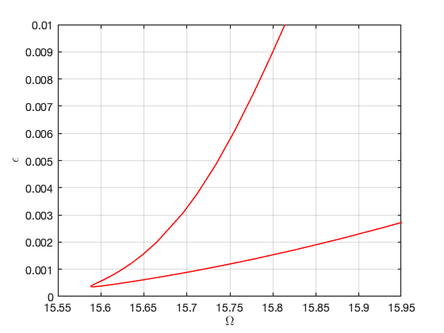 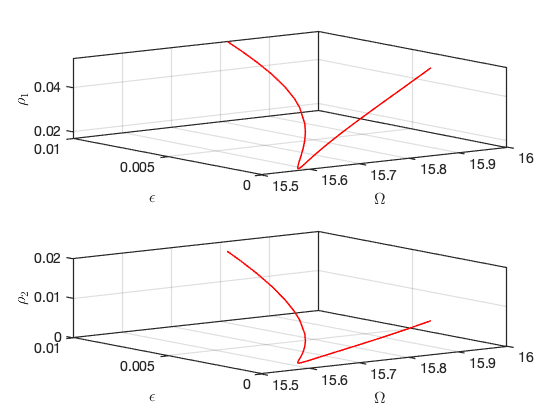 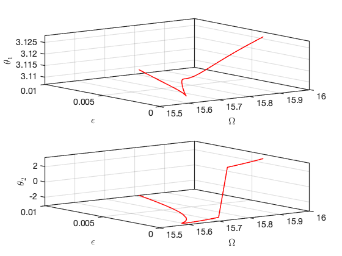 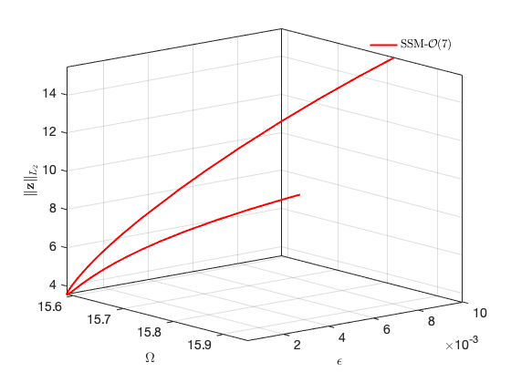 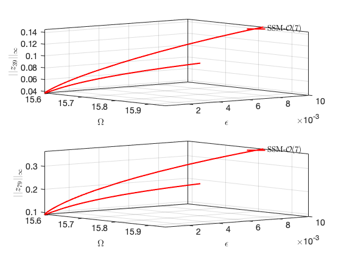 Investigation of a specific Hopf Bifurcation
Continuation of HB points with the other one as starting point
HBid2 = ['HB2-',num2str(nElements),'-',num2str(order),'c']; S.SSM_ep2HB(HBid2,isolid,HBlab(idx(2)),{freqRange,epsRange},outdof);
Run='HB2-40-7c.ep': Continue Hopf equilibria from label 6 of run isol-40-7c.
STEP DAMPING NORMS COMPUTATION TIMES
IT SIT GAMMA ||d|| ||f|| ||U|| F(x) DF(x) SOLVE
0 5.25e-08 2.21e+01 0.0 0.0 0.0
STEP TIME ||U|| LABEL TYPE om eps Rez1 Rez2 Imz1 Imz2
0 00:00:00 2.2078e+01 1 EP 1.5590e+01 2.0000e-03 -2.6008e-02 -1.7629e-03 8.0273e-03 -1.6839e-02
10 00:00:00 2.2054e+01 2 1.5575e+01 1.4241e-03 -2.5057e-02 2.3219e-03 6.3372e-03 -1.2466e-02
20 00:00:01 2.2051e+01 3 FP 1.5573e+01 1.3727e-03 -2.5879e-02 4.6800e-03 5.4331e-03 -1.0510e-02
20 00:00:01 2.2052e+01 4 1.5573e+01 1.3734e-03 -2.5905e-02 4.7219e-03 5.4177e-03 -1.0476e-02
30 00:00:02 2.2069e+01 5 1.5581e+01 1.7778e-03 -3.0613e-02 8.5207e-03 4.2172e-03 -7.7110e-03
40 00:00:02 2.2190e+01 6 1.5635e+01 4.2525e-03 -4.5196e-02 1.4560e-02 3.2436e-03 -5.4609e-03
50 00:00:03 2.2345e+01 7 1.5682e+01 6.7451e-03 -5.4499e-02 1.8082e-02 2.9696e-03 -4.9282e-03
60 00:00:04 2.2533e+01 8 1.5724e+01 9.1169e-03 -6.1379e-02 2.0852e-02 2.8586e-03 -4.7552e-03
64 00:00:04 2.2615e+01 9 EP 1.5740e+01 1.0000e-02 -6.3625e-02 2.1820e-02 2.8394e-03 -4.7392e-03
STEP TIME ||U|| LABEL TYPE om eps Rez1 Rez2 Imz1 Imz2
0 00:00:04 2.2078e+01 10 EP 1.5590e+01 2.0000e-03 -2.6008e-02 -1.7629e-03 8.0273e-03 -1.6839e-02
10 00:00:05 2.2212e+01 11 1.5657e+01 5.1508e-03 -3.4457e-02 4.1935e-03 9.3697e-03 -2.8826e-02
20 00:00:05 2.2371e+01 12 1.5712e+01 7.9793e-03 -4.1785e-02 1.6229e-02 8.9527e-03 -3.1306e-02
28 00:00:06 2.2507e+01 13 EP 1.5748e+01 1.0000e-02 -4.6462e-02 2.3175e-02 8.5302e-03 -3.0698e-02
the forcing frequency 1.5740e+01 is nearly resonant with the eigenvalue -1.0306e-03 + i1.5603e+01
the forcing frequency 1.5736e+01 is nearly resonant with the eigenvalue -1.0306e-03 + i1.5603e+01
the forcing frequency 1.5732e+01 is nearly resonant with the eigenvalue -1.0306e-03 + i1.5603e+01
.
.
.
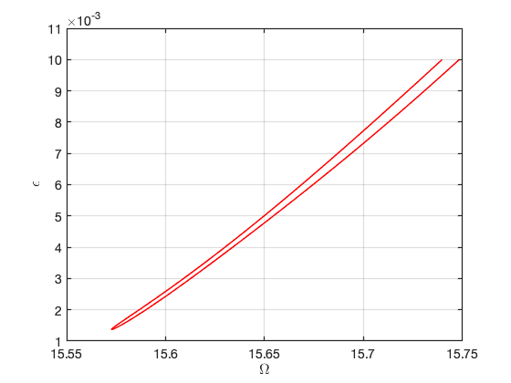 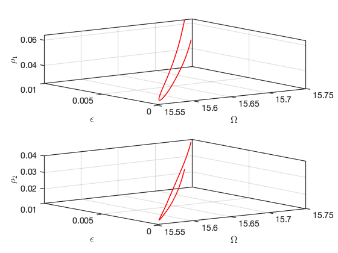 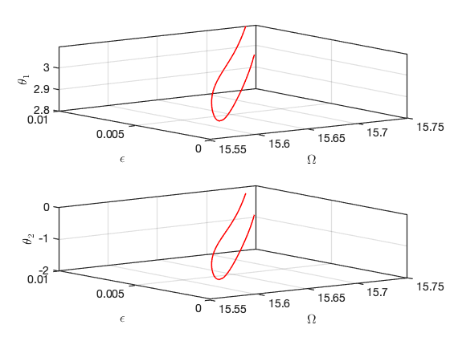 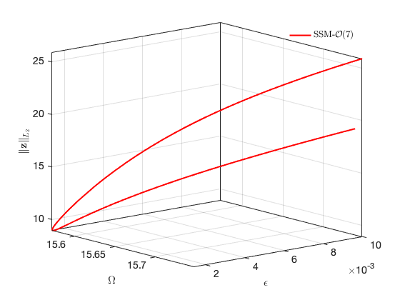 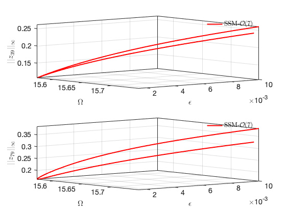 SSM_HB2po: continuation of periodic orbits from HB point
set(S.contOptions, 'h_max',0.3,'PtMX',100, 'bi_direct', false, 'NSV', 1,'NAdapt',5); % continuation setting po1id = ['po1-',num2str(nElements),'-',num2str(order),'c']; startpo = tic; set(S.FRCOptions,'parSamps',15.75); S.SSM_HB2po(po1id,isolid,HBlab1,'freq',freqRange,[outdof; outdof+n],'saveICs'); timings.po1FRC = toc(startpo);
Run='po1-40-7c.po': Continue periodic orbits born from a HB point with label 19 of run isol-40-7c.
STEP DAMPING NORMS COMPUTATION TIMES
IT SIT GAMMA ||d|| ||f|| ||U|| F(x) DF(x) SOLVE
0 3.05e-05 3.50e+01 0.0 0.0 0.0
1 1 1.00e+00 1.55e-03 2.48e-06 3.50e+01 0.0 0.0 0.0
2 1 1.00e+00 1.20e-03 1.49e-06 3.50e+01 0.0 0.0 0.0
3 1 1.00e+00 7.68e-04 6.08e-07 3.50e+01 0.0 0.0 0.0
4 1 1.00e+00 4.70e-04 2.27e-07 3.50e+01 0.0 0.0 0.0
5 1 1.00e+00 2.47e-04 6.25e-08 3.50e+01 0.0 0.1 0.0
6 1 1.00e+00 8.66e-05 7.71e-09 3.50e+01 0.0 0.1 0.0
7 1 1.00e+00 1.14e-05 1.34e-10 3.50e+01 0.0 0.1 0.0
8 1 1.00e+00 1.95e-07 3.88e-14 3.50e+01 0.0 0.1 0.0
STEP TIME ||U|| LABEL TYPE om po.period eps
0 00:00:00 3.4959e+01 1 EP 1.5665e+01 1.9122e+01 2.0000e-03
1 00:00:01 3.4959e+01 2 1.5665e+01 1.9122e+01 2.0000e-03
2 00:00:01 3.4958e+01 3 1.5665e+01 1.9121e+01 2.0000e-03
3 00:00:01 3.4957e+01 4 1.5665e+01 1.9120e+01 2.0000e-03
4 00:00:01 3.4956e+01 5 1.5665e+01 1.9119e+01 2.0000e-03
5 00:00:01 3.4954e+01 6 1.5665e+01 1.9117e+01 2.0000e-03
6 00:00:01 3.4951e+01 7 1.5665e+01 1.9115e+01 2.0000e-03
.
.
.
77 00:00:11 3.3423e+01 78 1.5744e+01 1.7625e+01 2.0000e-03
78 00:00:11 3.3281e+01 79 1.5749e+01 1.7485e+01 2.0000e-03
79 00:00:11 3.3255e+01 80 PS 1.5750e+01 1.7460e+01 2.0000e-03
79 00:00:11 3.3067e+01 81 1.5757e+01 1.7273e+01 2.0000e-03
80 00:00:11 3.2855e+01 82 1.5766e+01 1.7062e+01 2.0000e-03
81 00:00:12 3.2644e+01 83 1.5775e+01 1.6850e+01 2.0000e-03
82 00:00:12 3.2436e+01 84 1.5785e+01 1.6639e+01 2.0000e-03
83 00:00:12 3.2231e+01 85 1.5796e+01 1.6427e+01 2.0000e-03
84 00:00:12 3.2028e+01 86 1.5808e+01 1.6216e+01 2.0000e-03
85 00:00:12 3.1828e+01 87 1.5820e+01 1.6005e+01 2.0000e-03
86 00:00:12 3.1630e+01 88 1.5834e+01 1.5794e+01 2.0000e-03
87 00:00:12 3.1434e+01 89 1.5848e+01 1.5584e+01 2.0000e-03
88 00:00:13 3.1241e+01 90 1.5861e+01 1.5374e+01 2.0000e-03
89 00:00:13 3.1219e+01 91 1.5862e+01 1.5351e+01 2.0000e-03
90 00:00:13 3.1214e+01 92 1.5863e+01 1.5346e+01 2.0000e-03
91 00:00:13 3.1212e+01 93 1.5863e+01 1.5344e+01 2.0000e-03
92 00:00:13 3.1212e+01 94 1.5863e+01 1.5343e+01 2.0000e-03
93 00:00:14 3.1211e+01 95 1.5863e+01 1.5343e+01 2.0000e-03
94 00:00:14 3.1211e+01 96 1.5863e+01 1.5343e+01 2.0000e-03
95 00:00:14 3.1211e+01 97 1.5863e+01 1.5342e+01 2.0000e-03
96 00:00:14 3.1211e+01 98 1.5863e+01 1.5342e+01 2.0000e-03
97 00:00:14 3.1211e+01 99 FP 1.5863e+01 1.5342e+01 2.0000e-03
97 00:00:14 3.1211e+01 100 1.5863e+01 1.5342e+01 2.0000e-03
98 00:00:14 3.1211e+01 101 BP 1.5863e+01 1.5342e+01 2.0000e-03
98 00:00:14 3.1211e+01 102 1.5863e+01 1.5342e+01 2.0000e-03
99 00:00:14 3.1211e+01 103 1.5863e+01 1.5343e+01 2.0000e-03
100 00:00:14 3.1211e+01 104 EP 1.5863e+01 1.5343e+01 2.0000e-03
Constructing torus in reduced dynamical system
Interpolation at (omega,epsilon) = (1.566497e+01,2.000000e-03)
Interpolation at (omega,epsilon) = (1.566498e+01,2.000000e-03)
Interpolation at (omega,epsilon) = (1.566499e+01,2.000000e-03)
.
.
.
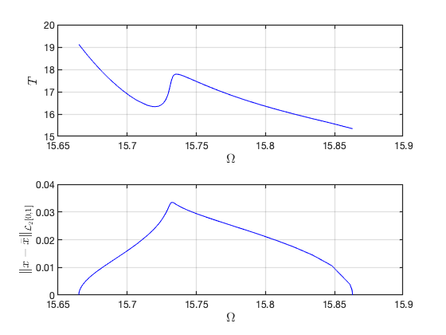Illustration of the construction of torus in reduced dynamical system Visualization of torus at (omega,epsilon)=(1.573303e+01,2.000000e-03) FRCs from ='po1-40-7c.po': generating torus in physical domain. the forcing frequency 1.5665e+01 is nearly resonant with the eigenvalue -1.0306e-03 + i1.5603e+01 the forcing frequency 1.5665e+01 is nearly resonant with the eigenvalue -1.0306e-03 + i1.5603e+01 the forcing frequency 1.5665e+01 is nearly resonant with the eigenvalue -1.0306e-03 + i1.5603e+01 . . .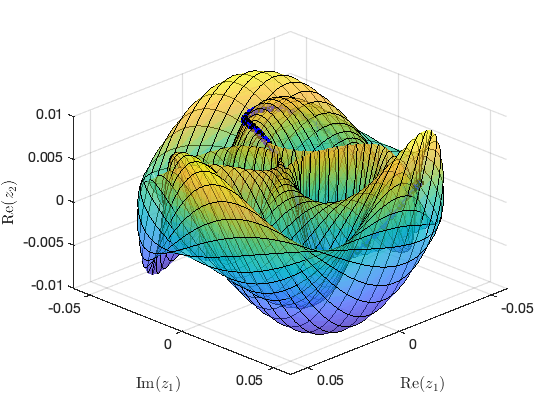

Continuation of periodic orbits from another HB point
HBlab2 = HBlab(idx(2)); po2id = ['po2-',num2str(nElements),'-',num2str(order),'c']; set(S.contOptions, 'h_max',0.05, 'PtMX', 70, 'NSV', 2, 'bi_direct', false, 'NAdapt', 10); % continuation setting startpo = tic; set(S.FRCOptions,'parSamps',[15.589, 15.5905]); S.SSM_HB2po(po2id,isolid,HBlab2,'freq',freqRange,[outdof; outdof+n],'saveICs'); timings.po2FRC = toc(startpo);
Run='po2-40-7c.po': Continue periodic orbits born from a HB point with label 6 of run isol-40-7c.
STEP DAMPING NORMS COMPUTATION TIMES
IT SIT GAMMA ||d|| ||f|| ||U|| F(x) DF(x) SOLVE
0 3.78e-05 2.95e+01 0.0 0.0 0.0
1 1 1.00e+00 6.42e-04 3.68e-07 2.95e+01 0.0 0.0 0.0
2 2 5.00e-01 1.37e-03 5.82e-07 2.95e+01 0.0 0.0 0.0
3 1 1.00e+00 9.75e-04 8.18e-07 2.95e+01 0.0 0.0 0.0
4 1 1.00e+00 3.23e-04 8.99e-08 2.95e+01 0.0 0.0 0.0
5 1 1.00e+00 6.79e-05 3.96e-09 2.95e+01 0.0 0.1 0.0
6 1 1.00e+00 2.35e-06 4.76e-12 2.95e+01 0.0 0.1 0.0
7 1 1.00e+00 3.57e-09 5.83e-16 2.95e+01 0.0 0.1 0.0
STEP TIME ||U|| LABEL TYPE om po.period eps
0 00:00:00 2.9541e+01 1 EP 1.5590e+01 1.3902e+01 2.0000e-03
2 00:00:00 2.9539e+01 2 1.5590e+01 1.3900e+01 2.0000e-03
4 00:00:01 2.9538e+01 3 1.5590e+01 1.3898e+01 2.0000e-03
6 00:00:01 2.9535e+01 4 1.5590e+01 1.3896e+01 2.0000e-03
8 00:00:01 2.9531e+01 5 1.5590e+01 1.3891e+01 2.0000e-03
10 00:00:01 2.9522e+01 6 1.5590e+01 1.3881e+01 2.0000e-03
12 00:00:02 2.9501e+01 7 1.5590e+01 1.3859e+01 2.0000e-03
14 00:00:02 2.9449e+01 8 PS 1.5591e+01 1.3803e+01 2.0000e-03
14 00:00:02 2.9448e+01 9 1.5591e+01 1.3802e+01 2.0000e-03
16 00:00:02 2.9382e+01 10 1.5591e+01 1.3732e+01 2.0000e-03
18 00:00:02 2.9317e+01 11 1.5591e+01 1.3662e+01 2.0000e-03
20 00:00:03 2.9273e+01 12 FP 1.5591e+01 1.3614e+01 2.0000e-03
20 00:00:03 2.9273e+01 13 SN 1.5591e+01 1.3614e+01 2.0000e-03
20 00:00:03 2.9251e+01 14 1.5591e+01 1.3591e+01 2.0000e-03
22 00:00:03 2.9186e+01 15 1.5591e+01 1.3521e+01 2.0000e-03
24 00:00:04 2.9151e+01 16 TR 1.5591e+01 1.3483e+01 2.0000e-03
24 00:00:04 2.9120e+01 17 1.5591e+01 1.3450e+01 2.0000e-03
26 00:00:04 2.9069e+01 18 PS 1.5591e+01 1.3395e+01 2.0000e-03
26 00:00:04 2.9055e+01 19 1.5590e+01 1.3380e+01 2.0000e-03
28 00:00:04 2.8990e+01 20 1.5590e+01 1.3309e+01 2.0000e-03
30 00:00:04 2.8925e+01 21 1.5590e+01 1.3238e+01 2.0000e-03
32 00:00:05 2.8860e+01 22 1.5590e+01 1.3168e+01 2.0000e-03
34 00:00:05 2.8796e+01 23 1.5590e+01 1.3097e+01 2.0000e-03
36 00:00:05 2.8731e+01 24 1.5589e+01 1.3026e+01 2.0000e-03
38 00:00:05 2.8667e+01 25 1.5589e+01 1.2956e+01 2.0000e-03
39 00:00:05 2.8649e+01 26 PS 1.5589e+01 1.2936e+01 2.0000e-03
40 00:00:05 2.8603e+01 27 1.5589e+01 1.2885e+01 2.0000e-03
42 00:00:05 2.8539e+01 28 1.5589e+01 1.2815e+01 2.0000e-03
44 00:00:05 2.8475e+01 29 1.5588e+01 1.2744e+01 2.0000e-03
46 00:00:05 2.8412e+01 30 1.5588e+01 1.2673e+01 2.0000e-03
48 00:00:06 2.8349e+01 31 1.5588e+01 1.2603e+01 2.0000e-03
50 00:00:06 2.8286e+01 32 1.5588e+01 1.2532e+01 2.0000e-03
52 00:00:06 2.8223e+01 33 1.5587e+01 1.2461e+01 2.0000e-03
54 00:00:06 2.8160e+01 34 1.5587e+01 1.2391e+01 2.0000e-03
56 00:00:06 2.8098e+01 35 1.5587e+01 1.2320e+01 2.0000e-03
58 00:00:06 2.8036e+01 36 1.5587e+01 1.2250e+01 2.0000e-03
60 00:00:07 2.7975e+01 37 1.5587e+01 1.2180e+01 2.0000e-03
62 00:00:07 2.7971e+01 38 1.5587e+01 1.2175e+01 2.0000e-03
64 00:00:07 2.7970e+01 39 1.5587e+01 1.2173e+01 2.0000e-03
66 00:00:07 2.7969e+01 40 FP 1.5587e+01 1.2173e+01 2.0000e-03
66 00:00:07 2.7969e+01 41 1.5587e+01 1.2173e+01 2.0000e-03
67 00:00:08 2.7969e+01 42 BP 1.5587e+01 1.2173e+01 2.0000e-03
68 00:00:08 2.7970e+01 43 1.5587e+01 1.2174e+01 2.0000e-03
70 00:00:08 2.7971e+01 44 EP 1.5587e+01 1.2175e+01 2.0000e-03
Constructing torus in reduced dynamical system
Interpolation at (omega,epsilon) = (1.559009e+01,2.000000e-03)
Interpolation at (omega,epsilon) = (1.559010e+01,2.000000e-03)
Interpolation at (omega,epsilon) = (1.559011e+01,2.000000e-03)
.
.
.
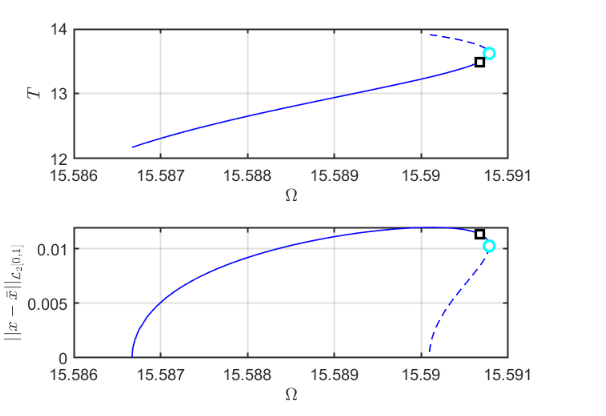 Illustration of the construction of torus in reduced dynamical system Visualization of torus at (omega,epsilon)=(1.559006e+01,2.000000e-03) FRCs from ='po2-40-7c.po': generating torus in physical domain. the forcing frequency 1.5590e+01 is nearly resonant with the eigenvalue -1.0306e-03 + i1.5603e+01 . . .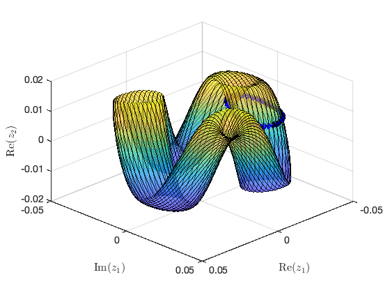 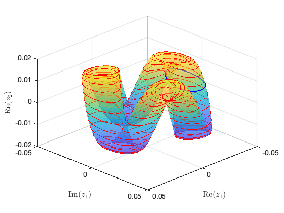
Continuation of Torus Bifurcations
SSM_po2TR: continuation of TR bifurcation periodic orbits Continuation of quasi-periodic Hopf bifurcation of two-dimensional invairant tori
bd = coco_bd_read([po2id,'.po']); TRlab = coco_bd_labs(bd,'TR'); assert(~isempty(TRlab), 'No TR periodic orbits are found'); set(S.contOptions, 'h_max',1, 'bi_direct', true, 'NAdapt', 0); % continuation setting TRid = ['TR-',num2str(nElements),'-',num2str(order),'c']; S.SSM_po2TR(TRid,po2id,TRlab,{freqRange,epsRange},[outdof; outdof+n]);
Run='TR-40-7c.po': Continue TR periodic orbits from label 16 of run po2-40-7c.
STEP DAMPING NORMS COMPUTATION TIMES
IT SIT GAMMA ||d|| ||f|| ||U|| F(x) DF(x) SOLVE
0 3.25e-07 3.05e+01 0.0 0.0 0.0
STEP TIME ||U|| LABEL TYPE om eps po.period
0 00:00:00 3.0538e+01 1 EP 1.5591e+01 2.0000e-03 1.3483e+01
2 00:00:00 3.0687e+01 2 1.5589e+01 1.9533e-03 1.3676e+01
4 00:00:01 3.1227e+01 3 1.5585e+01 1.7994e-03 1.4366e+01
6 00:00:02 3.1978e+01 4 1.5580e+01 1.6193e-03 1.5297e+01
8 00:00:04 3.2513e+01 5 1.5577e+01 1.5084e-03 1.5956e+01
10 00:00:04 3.2712e+01 6 1.5576e+01 1.4692e-03 1.6206e+01
12 00:00:06 3.2781e+01 7 1.5576e+01 1.4557e-03 1.6295e+01
14 00:00:07 3.2835e+01 8 1.5576e+01 1.4448e-03 1.6368e+01
16 00:00:09 3.2840e+01 9 1.5575e+01 1.4438e-03 1.6374e+01
18 00:00:11 3.2842e+01 10 1.5575e+01 1.4434e-03 1.6377e+01
20 00:00:12 3.2844e+01 11 1.5575e+01 1.4428e-03 1.6381e+01
22 00:00:13 3.2845e+01 12 1.5575e+01 1.4426e-03 1.6383e+01
24 00:00:14 3.2847e+01 13 1.5575e+01 1.4424e-03 1.6384e+01
26 00:00:14 3.2848e+01 14 1.5575e+01 1.4420e-03 1.6387e+01
28 00:00:16 3.2850e+01 15 1.5575e+01 1.4417e-03 1.6388e+01
30 00:00:16 3.2851e+01 16 1.5575e+01 1.4414e-03 1.6391e+01
32 00:00:17 3.2854e+01 17 1.5575e+01 1.4407e-03 1.6395e+01
34 00:00:19 3.2859e+01 18 1.5575e+01 1.4397e-03 1.6402e+01
36 00:00:20 3.2862e+01 19 1.5575e+01 1.4392e-03 1.6405e+01
38 00:00:21 3.2864e+01 20 1.5575e+01 1.4387e-03 1.6408e+01
40 00:00:22 3.2868e+01 21 1.5575e+01 1.4379e-03 1.6414e+01
42 00:00:23 3.2870e+01 22 1.5575e+01 1.4374e-03 1.6417e+01
44 00:00:24 3.2873e+01 23 1.5575e+01 1.4367e-03 1.6422e+01
46 00:00:25 3.2876e+01 24 1.5575e+01 1.4361e-03 1.6426e+01
48 00:00:27 3.2877e+01 25 1.5575e+01 1.4359e-03 1.6428e+01
50 00:00:27 3.2879e+01 26 1.5575e+01 1.4355e-03 1.6430e+01
52 00:00:28 3.2880e+01 27 1.5575e+01 1.4352e-03 1.6432e+01
54 00:00:29 3.2883e+01 28 1.5575e+01 1.4347e-03 1.6435e+01
56 00:00:29 3.2889e+01 29 1.5575e+01 1.4334e-03 1.6445e+01
58 00:00:31 3.2890e+01 30 1.5575e+01 1.4331e-03 1.6447e+01
60 00:00:32 3.2892e+01 31 1.5575e+01 1.4327e-03 1.6449e+01
62 00:00:33 3.2894e+01 32 1.5575e+01 1.4322e-03 1.6453e+01
64 00:00:34 3.2895e+01 33 1.5575e+01 1.4319e-03 1.6455e+01
66 00:00:35 3.2896e+01 34 1.5575e+01 1.4316e-03 1.6456e+01
68 00:00:36 3.2898e+01 35 1.5575e+01 1.4314e-03 1.6458e+01
70 00:00:37 3.2899e+01 36 EP 1.5575e+01 1.4311e-03 1.6460e+01
STEP TIME ||U|| LABEL TYPE om eps po.period
0 00:00:37 3.0538e+01 37 EP 1.5591e+01 2.0000e-03 1.3483e+01
2 00:00:38 3.0439e+01 38 1.5592e+01 2.0324e-03 1.3354e+01
4 00:00:38 3.0307e+01 39 1.5593e+01 2.0774e-03 1.3179e+01
6 00:00:39 2.9836e+01 40 1.5597e+01 2.2542e-03 1.2544e+01
8 00:00:40 2.8879e+01 41 1.5609e+01 2.7208e-03 1.1186e+01
10 00:00:41 2.8311e+01 42 1.5618e+01 3.0970e-03 1.0326e+01
12 00:00:42 2.7707e+01 43 1.5630e+01 3.6162e-03 9.3710e+00
14 00:00:42 2.6858e+01 44 1.5652e+01 4.6459e-03 7.9764e+00
16 00:00:43 2.6233e+01 45 1.5674e+01 5.7115e-03 6.9515e+00
18 00:00:44 2.5731e+01 46 1.5697e+01 6.8408e-03 6.1454e+00
20 00:00:44 2.5257e+01 47 1.5724e+01 8.2929e-03 5.3803e+00
22 00:00:45 2.4872e+01 48 EP 1.5754e+01 1.0000e-02 4.7271e+00
Constructing torus in reduced dynamical system
Interpolation at (omega,epsilon) = (1.557513e+01,1.431095e-03)
Interpolation at (omega,epsilon) = (1.557514e+01,1.431408e-03)
Interpolation at (omega,epsilon) = (1.557515e+01,1.431643e-03)
Interpolation at (omega,epsilon) = (1.557516e+01,1.431905e-03)
.
.
.
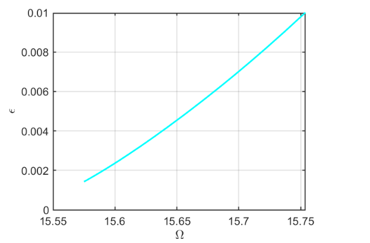
Illustration of the construction of torus in reduced dynamical system Visualization of torus at (omega,epsilon)=(1.575373e+01,1.000000e-02) FRCs from ='TR-40-7c.po': generating torus in physical domain. the forcing frequency 1.5575e+01 is nearly resonant with the eigenvalue -1.0306e-03 + i1.5603e+01 the forcing frequency 1.5576e+01 is nearly resonant with the eigenvalue -1.0306e-03 + i1.5603e+01 the forcing frequency 1.5577e+01 is nearly resonant with the eigenvalue -1.0306e-03 + i1.5603e+01 the forcing frequency 1.5580e+01 is nearly resonant with the eigenvalue -1.0306e-03 + i1.5603e+01 . . .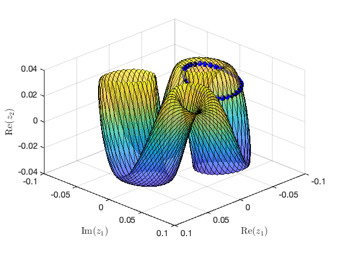 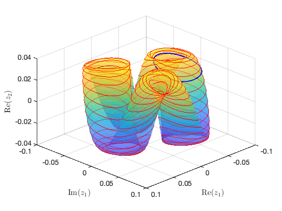
SSM_TR2tor: continuation of tori from TR point Continuation of three-dimensional invariant tori
TRlab = 1; % set(S.contOptions, 'h_max',100,'PtMX',50,'bi_direct',false,'NSV', 5); % continuation setting set(S.FRCOptions,"torNumSegs",15); %2*15+1=31 segments torid = ['tor-',num2str(nElements),'-',num2str(order),'c']; starttor = tic; S.SSM_TR2tor(torid,TRid,TRlab,'freq',freqRange,[outdof; outdof+n],'saveICs'); timings.torFRC = toc(starttor);
Run='tor-40-7c.tor': Continue tori born from TR point with label 1 of run TR-40-7c.
STEP DAMPING NORMS COMPUTATION TIMES
IT SIT GAMMA ||d|| ||f|| ||U|| F(x) DF(x) SOLVE
0 3.84e-06 1.16e+02 0.0 0.0 0.0
1 1 1.00e+00 2.11e-05 2.17e-10 1.16e+02 0.1 0.2 0.1
2 1 1.00e+00 1.82e-05 8.24e-11 1.16e+02 0.1 0.5 0.1
3 1 1.00e+00 1.19e-08 2.79e-15 1.16e+02 0.1 0.7 0.1
STEP TIME ||U|| LABEL TYPE om varrho om1 om2 eps
0 00:00:02 1.1586e+02 1 EP 1.5591e+01 5.0343e-03 2.3459e-03 4.6599e-01 2.0000e-03
2 00:00:19 1.1586e+02 2 BP 1.5591e+01 5.0337e-03 2.3457e-03 4.6599e-01 2.0000e-03
5 00:00:24 1.1586e+02 3 1.5591e+01 5.0252e-03 2.3417e-03 4.6599e-01 2.0000e-03
10 00:00:33 1.1586e+02 4 1.5591e+01 4.9948e-03 2.3275e-03 4.6599e-01 2.0000e-03
15 00:00:42 1.1586e+02 5 1.5591e+01 4.9435e-03 2.3036e-03 4.6598e-01 2.0000e-03
20 00:00:53 1.1586e+02 6 1.5591e+01 4.8695e-03 2.2690e-03 4.6597e-01 2.0000e-03
25 00:01:03 1.1586e+02 7 1.5591e+01 4.7748e-03 2.2248e-03 4.6594e-01 2.0000e-03
30 00:01:15 1.1586e+02 8 1.5591e+01 4.6759e-03 2.1787e-03 4.6594e-01 2.0000e-03
35 00:01:24 1.1587e+02 9 1.5591e+01 4.5589e-03 2.1240e-03 4.6590e-01 2.0000e-03
40 00:01:36 1.1587e+02 10 1.5591e+01 4.4384e-03 2.0677e-03 4.6588e-01 2.0000e-03
45 00:01:47 1.1587e+02 11 1.5591e+01 4.3157e-03 2.0105e-03 4.6585e-01 2.0000e-03
50 00:02:02 1.1587e+02 12 EP 1.5591e+01 4.2020e-03 1.9573e-03 4.6581e-01 2.0000e-03
Constructing 3D torus in reduced dynamical system
Interpolation at frequency 1.559067e+01
.
.
.
FRCs from ='tor-40-7c.tor': generating torus in physical domain.
the forcing frequency 1.5591e+01 is nearly resonant with the eigenvalue -1.0306e-03 + i1.5603e+01
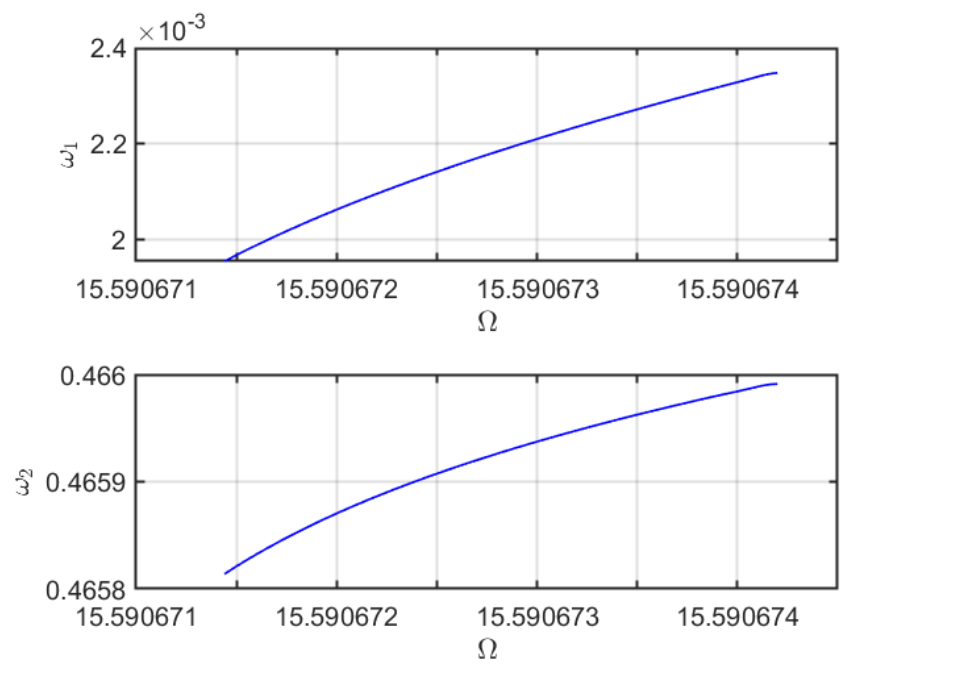